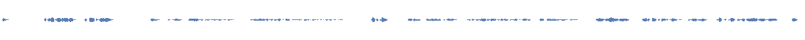

When a podcast host says "spaaaace" and holds the vowel for 1.1 seconds, every ASR (automatic speech recognition) transcribes it as "space." When two friends banter and one reacts with "Oh. Ooh. Mm." for 2.4 seconds of pure non-verbal communication, the transcript shows three punctuated words. When a speaker abandons a clause mid-thought — "I really have no — I never thought…" — the transcript records an em-dash. The audio records an affect shift.
That's the gap. The training data for every TTS system is built from transcripts that discard the expressive vocabulary humans actually use. Drawn-out vowels, reactive backchannels, mid-sentence register shifts, the timing of a laugh — all of it is flattened into clean text before a TTS model ever sees it. The model can't learn what it's never shown.
This post is about what that gap sounds like, why it exists, and what it would take to close it. Press play below — then expand the comparisons to see what three STT systems and four TTS engines make of the same 25 seconds.
Oh. If you watch nigga movies, I feel like it's one of those. But for a massive chunk of my life, I didn't because my mama didn't let me watch anything that was rated worse than PG 13. That's true. And then when I went off college, I just had no desire to go back and watch all the Don't Be a Menaces. And I mean, I really have no I'd I never thought that there was a chance that you have seen that. But the point is that many of you at
sentiment: negative (-0.45) · intents: Express frustration about nigga movies · topics: Movie watching · summary: Speaker 0 discusses how he didn't watch the Partners in the Middle, citing his lack of desire to return to watching movies that were rated PG 13.
If you watch nigga movies, I feel like it's one of those. But for a massive chunk of my life, I didn't because my mom didn't let me watch anything that was rated worse than PG-13. And then when I went off to college, I just had no desire to go back and watch all the Don't Be a Menaces. I mean, I really have no idea. I never thought that there was a chance that you have seen it. But the point is that many of you...
Oh. If you watch nigga movies, I feel like it's one of those. Mm. But for a, a massive chunk of my life I didn't, 'cause my mama didn't let me watch anything that was rated worse than PG-13. That's true. And then when I went off to college, I just had no desire to go back and watch all the Don't Be a Menaces. [laughs] And I mean, I really have no— I never thought that there was a chance that you have seen that.
audio events captured: [laughs]
What this comparison shows: (1) OpenAI drops the leading 'Oh'; Eleven keeps 'Oh' AND the 'Mm-hmm' backchannel that the other two missed. (2) Deepgram's 'Express frustration' / 'negative' sentiment are wrong — the host is warm and reminiscent. (3) Only Eleven captures [laughs] mid-utterance. (4) Deepgram preserves the disfluency 'I really have no I'd I never thought'; OpenAI invents 'no idea' to clean it up.
Listen for: The mid-sentence pivot at the em-dash and the [laughs] event Eleven caught. None of these STT outputs carry the affect of the clip — they capture words and (for one) events.
The original is 25 seconds. The same 8-segment script rendered through each TTS lab takes 28.7s to 34.9s. The chart aligns all 9 versions on a shared time axis, colored by speaker. Clean = raw STT transcript; Enhanced = same transcript with lab-appropriate affective markup. Switch tabs to compare timing vs silence placement.

That gap is what this project is trying to close. ElevenLabs v3 gives you [cheerful] or [deadpan]. It will not give you the mid-thought interruption above — one speaker abandoning a clause and restarting with softer affect. The transcript reads as a clean sentence with an em-dash. The audio is something no tag captures.
We're building a fine-tuned script writer — a model whose output has the affective contour, the cue tags, the drawn-out vowels, and the per-segment direction baked in, so when any TTS reads it, what comes out is something a human voice actor would recognise as expressive.
The script writer needs to emit four layers of paralinguistic detail that conventional script generation throws away:
uh, mm-hm, hmm, oh, and their held forms (uhhhh, mmmmm). Their placement is the difference between a flat read and a believable one.[laughs], [sighs], [breath], [whispers], [shouts] — placed at the exact word boundary where they occur, not as global sentence markers.The writer has to cover the full emotional range — not just happy/sad/angry/neutral but blended states like amused-resigned, hopeful-skeptical, warm-sarcastic. Current TTS can't reach those from a flat transcript alone; a script writer that puts affect where it goes is the leverage point.
"Expressive" is the load-bearing word. The goal isn't "monologue for one tired podcaster." It's the full surface area of human speech — comedy timing, meditation silences, conversational backchannels, scene dialogue, songlike delivery — and under all of those, the emotion spectrum a real voice carries: warmth, amusement, sarcasm, fatigue, grief, hopefulness, curiosity. And the blended states that are most of human affect (amused-resigned, hopeful-skeptical, excited-anxious). The script-writer is the layer that says "here is exactly which emotion goes where in the script", and the downstream TTS gets to focus on rendering instead of guessing.
The script writer starts as a LoRA fine-tune, scaling to a full 7-8B fine-tune if tag placement accuracy demands it. (Fish Audio S2 fine-tuned a full 30B model for their annotator; my task is narrower but LoRA may not have enough capacity for ~110 inline tags.) The downstream TTS can be any engine — the first validation gate is whether tagged scripts produce measurably better output than untagged ones. Portability across TTS engines is the only way to keep iterating without vendor lock-in.
The immediate question: where do the training annotations come from? Hand-labeling 100 hours at this granularity would take months. Frontier audio LLMs (Vertex Gemini 2.5 Pro) do it well but cost money and lock you into a closed API. Self-hosting an audio LLM that gets close enough would let us scale without rate limits, without sending audio to a third party, and with a path to fine-tune the annotator later. That's the build documented here.
As of May 2026, audio LLMs and TTS are in two different places. Audio understanding has moved fast. Frontier closed models — Vertex Gemini 2.5 Pro, OpenAI gpt-realtime — can listen to a 5-minute podcast and produce structured descriptions: speakers, emotions, vocal events, drawn-out words. Open models are catching up at roughly one per quarter — Qwen3-Omni, Kimi-Audio, MiDashengLM. Audio synthesis has also moved. ElevenLabs v3 exposes ~70 inline tags; Hume Octave 2 takes free-text prosodic direction; Google Gemini 3.1 Flash TTS accepts scene-level direction inline. But the ceiling moved, it didn't disappear. Every closed system still applies one uniform style across each tagged region. Continuous within-span affect — sarcasm, the smirk-while-talking — remains unsolved.
The corpus + script-writer project lives in that asymmetry: I can build the training data from today's audio understanding models, and bet that synthesis catches up (or that even current synthesis renders richly-tagged scripts better than flat ones).
The biggest lever for expressive TTS quality isn't model architecture or training scale — it's annotation quality.
Fish Audio's S2 improved its Tag Activation Rate from 62.6% to 88.1% — a 41% relative improvement — by better-annotating its training data. Same architecture, same pipeline, just richer labels. (arXiv:2603.08823) The DeEAR framework showed a 3x improvement in emotion expressiveness from data curation alone. And SpeechJudge found that a fine-tuned reward model (77.2% accuracy) outperforms every frontier AudioLLM at judging speech quality, while traditional metrics like UTMOS (53.7%) are barely better than coin flips. Annotation quality drives everything — training data and evaluation.
The field is converging on a spectrum of annotation approaches:
[laughs] emerged from co-occurring text + audio events. Works for some events, unreliable for others.We're building in the "rich transcription" tier, aiming toward "annotation-as-reward."
Take 5-minute audio clips, run each through an annotation pipeline that emits structured JSON, use those triples as supervised-learning data. In practice, the dark box is a multi-pass pipeline — VAD, diarization, ASR, emotion classifiers, pitch extractors — because no single audio LLM captures everything. The EACL 2026 finding on "lexical dominance" (Gemini scores 96.6% on text-based audio tasks but 25-35% on audio-only paralinguistic tasks) is why. A noisy annotator means a script writer that puts [laughs] in the wrong places.
The first model I reached for was Audio Flamingo Next, NVIDIA's 8B audio model. On the first run, it returned identical output for every clip — same speaker count, same tone, same four breath events at the same timestamps. NPR news, a Moth story, a meditation, a stand-up set, all the same JSON. It wasn't broken. It just wasn't listening; the audio kwarg was being silently dropped by the processor.
Model leaderboards are not model deployments. The number on the HuggingFace page is one promise; the number you get on your data, in your container, is a different one. This post documents the gap.
Calibrating the annotation box is the single highest-leverage decision in the whole pipeline.
Three clips, three failure modes.
Same clip. Pay attention to the mid-thought abandon: "And I mean, I really have no — I never thought that there was a chance that you have seen that." That em-dash isn't punctuation — it's an affect shift. Confident anecdote to softer acknowledgment, inside a single breath.
Oh. If you watch nigga movies, I feel like it's one of those. But for a massive chunk of my life, I didn't because my mama didn't let me watch anything that was rated worse than PG 13. That's true. And then when I went off college, I just had no desire to go back and watch all the Don't Be a Menaces. And I mean, I really have no I'd I never thought that there was a chance that you have seen that. But the point is that many of you at
sentiment: negative (-0.45) · intents: Express frustration about nigga movies · topics: Movie watching · summary: Speaker 0 discusses how he didn't watch the Partners in the Middle, citing his lack of desire to return to watching movies that were rated PG 13.
If you watch nigga movies, I feel like it's one of those. But for a massive chunk of my life, I didn't because my mom didn't let me watch anything that was rated worse than PG-13. And then when I went off to college, I just had no desire to go back and watch all the Don't Be a Menaces. I mean, I really have no idea. I never thought that there was a chance that you have seen it. But the point is that many of you...
Oh. If you watch nigga movies, I feel like it's one of those. Mm. But for a, a massive chunk of my life I didn't, 'cause my mama didn't let me watch anything that was rated worse than PG-13. That's true. And then when I went off to college, I just had no desire to go back and watch all the Don't Be a Menaces. [laughs] And I mean, I really have no— I never thought that there was a chance that you have seen that.
audio events captured: [laughs]
What this comparison shows: (1) OpenAI drops the leading 'Oh'; Eleven keeps 'Oh' AND the 'Mm-hmm' backchannel that the other two missed. (2) Deepgram's 'Express frustration' / 'negative' sentiment are wrong — the host is warm and reminiscent. (3) Only Eleven captures [laughs] mid-utterance. (4) Deepgram preserves the disfluency 'I really have no I'd I never thought'; OpenAI invents 'no idea' to clean it up.
Listen for: The mid-sentence pivot at the em-dash and the [laughs] event Eleven caught. None of these STT outputs carry the affect of the clip — they capture words and (for one) events.
The question: take that transcript, feed it to the best TTS engines with all available markup — how close do they get to the original? That gap is what the script-writer fine-tune is trying to close.
Try reproducing that em-dash pivot with ElevenLabs v3 by chunking — first half [confident], second half [warm, softer]. Every tag boundary becomes an acoustic seam. WeSCon (arXiv:2509.24629) calls these "unnatural acoustic discontinuities at segment boundaries". Other work attacks the same problem: Microsoft's EmoCtrl-TTS uses continuous valence/arousal trajectories instead of discrete labels, and CoCoEmo names the deeper limitation: single-label utterance-level control "collapses affective diversity".
The opening of a Smartless live show. Three voices pile onto a single beat — "One more crack at it" — then hyped-up gratitude, then a self-deprecating setup about smacking Sean across the face. The same speaker simultaneously performs excitement and undercuts himself with dry self-deprecation. Two affects, same words.
Less. One more crack at it. Get one more crack at it. Let him have one more crack. Guys, we're so excited. We're here, and thank you for coming out tonight. This is very exciting for us. Yeah. I gave Sean a big smack across the face right before we came out, and I'm just waiting for her to hit me back. So just pardon me if I'm over here. It was so loud. I can't believe you heard it. A little bit red over here. I'm sure it
sentiment: neutral (-0.03) · intents: Express excitement, Request assistance · topics: Excited and excited event, Speaker response · summary: Speaker 0 is excited to have one more crack and asks the others to help. They express excitement and mention that they gave Sean a big smile.
Guys, we're so excited we're here and thank you for coming out tonight.
list. Woo! One more crack at it. One more, one more. One more crack at it. Oh, oh. Let him have one more crack. Um, guys, we're so excited we're here, and thank you for coming out tonight. This is very exciting for us. Yeah. I gave Sean a big smack across the face right before we came out- I am red over here.
What this comparison shows: (1) OpenAI massively truncated — ONE sentence out of ~ten spoken; overlapping voices confused endpointing. (2) Deepgram caught everything but hallucinated 'big smile' in its summary (actual: 'big smack'). (3) ElevenLabs captured cheering, laughs, false starts, and filler — most paralinguistically rich output by far. (4) None captured all 3 speakers — Deepgram says 1, Eleven says 2, ground truth is 3.
Listen for: What each STT shows vs misses. Eleven is closest to corpus-grade; OpenAI's massive truncation is a production-risk surprise.
The question: take that transcript, feed it to the best TTS engines with all available markup — how close do they get to the original? That gap is what the script-writer fine-tune is trying to close.
Real human affect is rarely one label. "We're so excited" is performed for the audience while "I gave Sean a big smack" undercuts it — hype + dry self-mockery in one breath. Three voices echoing "one more crack at it" is an emotional unit no tag captures. Sentence patterns that exercise this problem:
[grateful] and it's wrong; tag the second half [sarcastic] and the transition is a cliff.I call this the "director's note" framing — direction at the scene level, like screenplay stage directions. Hume's Octave 2 calls their equivalent field "Acting Instructions". Voice acting works this way: a director gives one paragraph of intent before a scene, not [smiling] over each word.
Tara Brach delivering a meditation. Listen to how she pronounces "space" — held for around a second, four times longer than dictionary expects. The silences between phrases run 2-3 seconds. None of this duration information appears in the transcript.
Perhaps you can even sense the space between the sensations just like you can sense the space or visualize the space between the particles in an atom, the nucleus of an atom. Space and aliveness.
sentiment: positive (+0.35) · intents: Improve spatiomotion · topics: Space perception · summary: Perhaps you can even sense the space between the sensations just like you can sense the space or visualize the space between the particles in an atom, the nucleus of an atom.
Perhaps you can even sense the space between the sensations, just like you can sense the space or visualize the space between the particles in an atom, the nucleus of an atom. Space and aliveness.
Perhaps you can even sense the space between the sensations, just like you can sense the space or visualize the space between the particles in an atom, in the nucleus of an atom. Space and aliveness.
What this comparison shows: Three near-identical transcripts — the easy case (single speaker, no overlap). ASRs converge on words; they diverge on paralinguistic events. Deepgram's intent 'Improve spatiomotion' is a hallucinated word. None of the transcripts encode the held vowels on 'space' or the 2.5s silences.
Listen for: Even on the easy case, all three miss what the audio actually carries: prosody. 'space' (~280ms expected) is held ~1.1s. Three transcripts, zero of them encode that.
The question: take that transcript, feed it to the best TTS engines with all available markup — how close do they get to the original? That gap is what the script-writer fine-tune is trying to close.
The Deepgram transcript is technically correct — every word is right. What's missing: "space" is held ~1.1s (vs ~280ms expected), there's a 2.5s silence between "sensations" and "just like". The text says "space"; the audio says "spaaaaace". Most transcription pipelines, including CrisperWhisper, normalize elongated spellings because the dictionary doesn't have entries for them.
If we want the script writer to emit "spaaaace" or "heyyy" in the right places, the training data has to contain those spellings. Standard ASR throws them away, so the audio-LLM annotator has to re-inject them by listening for duration ratios over a threshold.
Each audio block above has a collapsible TTS comparison: four labs (Gemini 3.1 Flash, Gemini 2.5 Pro, ElevenLabs v3, OpenAI gpt-4o-mini-tts), each in two modes — Clean (raw STT, no tags) and Enhanced (lab-appropriate markup).
Key findings across all four labs:
[softly], [whisper]) tripped the safety filter on the meditation script.The delta between clean and enhanced rows is the whole point. Listen to Tara Brach across the four labs — that's where the gap is loudest.
On first pass we treated The Read as single-speaker. It's a back-and-forth between Crissle West (F) and Kid Fury (M). The correction shows what the corpus pipeline does at scale: Scribe v2's speaker_id tags break the clip into 8 turns; gender labels are cross-checked (no STT returns gender natively); each turn routes to the appropriate voice per lab. Speaker IDs from one model, gender from another, voice routing from a manual mapping — "STT → faithful TTS" is not closed by any single product.
No production ASR returns accent or dialect information. Deepgram, ElevenLabs, OpenAI, CrisperWhisper — all return a BCP-47 language tag or just text. None returns "Black American", "Southern AAVE", or "British RP". Open-source classifiers exist (CommonAccent covers 16 English accents) but AAVE isn't a class in any of them.
The consequence: The Read's hosts code-switch into AAVE constantly. Feed a clean transcript to a default TTS voice and you get a generic white-American reading. We had to route accent manually — ElevenLabs via voice library, Gemini and OpenAI via preamble direction. Adherence is hit-or-miss. Accent-aware TTS isn't a production capability in May 2026. The end-to-end pipeline "audio → derived accent → matched TTS voice" doesn't exist as a shipped product.
Subtler affects are even further behind. Sarcasm requires modeling the divergence between semantic content and prosodic delivery — no production TTS exposes a controllable knob for it, for irony, or for the polite-chuckle-versus-genuine-laugh distinction. Non-frontier TTS (Bark, Sesame CSM, Kyutai Moshi) sits well behind on emotion expressiveness.
The thread through all three layers: at every current TTS tier, continuous human affect is approximated by discrete styling. Our bet: build a corpus whose training data carries the affective contour finer than the global tag, pairing paragraph-level scene metadata with per-speaker inline markup, so the writer learns when to describe affect versus when to mark it.
The same annotation pipeline that creates the training data can also validate TTS output. Fish Audio S2 and CosyVoice 3 both reuse their annotation models as RL reward signals. Building the annotator isn't just about creating training data — it's about creating the evaluation engine for everything downstream.
The open question: does a script writer trained on richly annotated data produce scripts that downstream TTS renders more expressively than an untagged baseline? That validation is in progress; we'll share tag activation rates and listener preference numbers when they're ready.
Three takeaways:
If you work in speech and see something I've gotten wrong — a methodology gap, a better tool, a paper I should have cited — I'd genuinely like to know. Reach me at amal.bearblog.dev or wherever you saw this posted.